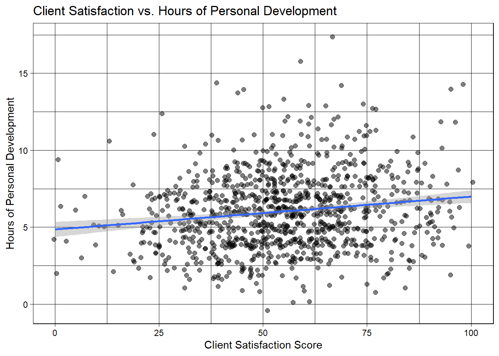
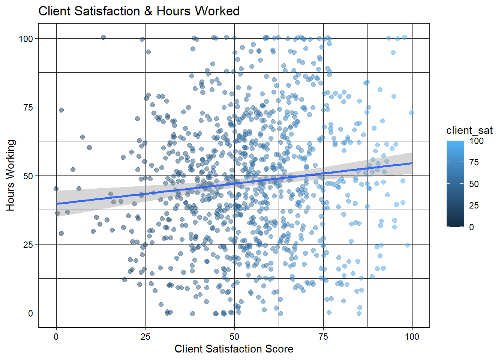

Warning: package 'car' was built under R version 4.2.3
Loading required package: carData
Warning: package 'carData' was built under R version 4.2.3
Attaching package: 'car'
The following object is masked from 'package:psych':
logit
The following object is masked from 'package:dplyr':
recode
The following object is masked from 'package:purrr':
some
Code
library(sandwich)
Warning: package 'sandwich' was built under R version 4.2.3
Code
library(stargazer)
Please cite as:
Hlavac, Marek (2022). stargazer: Well-Formatted Regression and Summary Statistics Tables.
R package version 5.2.3. https://CRAN.R-project.org/package=stargazer
Change variable names then make a descriptive table, make new column
First and foremost, there are a few glaring things I want to clean within this data. First, there are two psych score columns. I have no need for two separate columns because it doesn’t increase their value. Instead, I’ll average out the two scores in a new column and delete the original two. As I clean the data, I have the following primary research question in mind: How does quantity of hours worked and quantity of personal development hours affect client satisfaction?
Also, I’ll rename headers to make the data easier to work with.
Code
#head(JP)# Add psych test 1 & 2 and divide by two, making new average score columnJP$avg_psych_score <- (JP$PsychTest1 + JP$PsychTest2)/2#Remove psych tests 1 & 2JP <- JP[ ,-1]JP <- JP[ ,-1]#Create new df with renamed variablesJP_Clean <- JP %>%rename(hrs_personal_dev ="HrsTrn",hrs_working ="HrsWrk",client_sat ="ClientSat",super_sat ="SuperSat",success_project_complete ="ProjCompl",years_edu ="YrsEdu" )head(JP_Clean)
Create df with variables, meaning, and measurement scale
The data is only as impactful as our understanding of it. I will create a indexed df below with each variable and its meaning.
Code
# Create variablesVariables <-c('years_edu', 'IQ', 'hrs_personal_dev', 'hrs_working', 'client_sat', 'super_sat', 'success_project_complete', 'avg_psych_score')# Add meaning for each variableMeaning <-c('Years of higher education', 'IQ Test Score', 'Hours dedicated to personal culture, outside of work', 'Hours worked on average per week', 'Customer satisfaction with the worker, score 0-100', 'Satisfaction of the superior with the worker, score 0-100', 'Percentage of projects successfully completed, score 0-100', 'Psychological test, score 0-100 (2 tests)')# Add measurement scale for each variable Measurement.Scale <-c('Discrete', 'Continuous', 'Continuous','Continuous', 'Continuous','Continuous', 'Continuous', 'Continuous')# Join the variables to create a data frameIndex_1 <-data.frame(Variables, Meaning, Measurement.Scale)#View(Index)
Summarize
Load in summarytools to get stats analysis of variables
The best way I have found to get a holistic understanding and look at all variables is to use summarytools (only works for numeric variables, luckily all of mine are numeric). It displays mean, std. deviation, max, min, and other measures that may be valuable for our descriptive analysis.
Plots of client satisfaction vs. hrs worked, hrs personal development & One-Variable Regression
My personal favorite visualizations - geom_jitter/point to help show the correlation between hours of personal development and customer satisfaction. Below the viz, we’ll calculate the correlation and see if there is any significance.
Code
#Client sat has a mean of 54.9, so we will filter for the best performers and evaluate their hours worked, then look at all hours worked.JP_Clean %>%#filter(client_sat >= "54.9") %>% ggplot(aes(client_sat,hrs_personal_dev))+geom_jitter(size=2, alpha =0.5)+#width = xgeom_smooth(method ="lm")+#facet_wrap(~Gender)+labs(x='Client Satisfaction Score', y='Hours of Personal Development') +theme_linedraw()+labs(title="Client Satisfaction vs. Hours of Personal Development ")
`geom_smooth()` using formula = 'y ~ x'

Code
# NOW LETS LOOK AT HOURS OF PERSONAL DEVELOPMENT AND SEE IF THAT ACTUALLY INCREASES CLIENT SATIFACTIONcorrelation2 <-cor(JP_Clean$hrs_personal_dev,JP_Clean$client_sat)print(correlation2)
Warning: The following aesthetics were dropped during statistical transformation: colour
ℹ This can happen when ggplot fails to infer the correct grouping structure in
the data.
ℹ Did you forget to specify a `group` aesthetic or to convert a numerical
variable into a factor?

Code
# We'll new look atcorrelation <-cor(JP_Clean$client_sat, JP_Clean$hrs_working)print(correlation)
Call:
lm(formula = JP_Clean$client_sat ~ JP_Clean$hrs_working)
Residuals:
Min 1Q Median 3Q Max
-56.139 -11.898 -0.161 11.516 45.919
Coefficients:
Estimate Std. Error t value Pr(>|t|)
(Intercept) 51.01020 1.25892 40.519 < 2e-16 ***
JP_Clean$hrs_working 0.08282 0.02352 3.521 0.000449 ***
---
Signif. codes: 0 '***' 0.001 '**' 0.01 '*' 0.05 '.' 0.1 ' ' 1
Residual standard error: 17.9 on 998 degrees of freedom
Multiple R-squared: 0.01227, Adjusted R-squared: 0.01128
F-statistic: 12.4 on 1 and 998 DF, p-value: 0.0004485
Code
# No real correlation, seems more hours worked doesn't necessarily mean those hours were used wisely, as client often seems unhappy as hours increase.
No real correlation, seems more hours worked doesn’t necessarily mean those hours were used wisely, as client often seems unhappy as hours increase.
Multivariate Regression - Project 2 Starts (New Info)
Code
lin_model_work <-lm(JP_Clean$client_sat ~ JP_Clean$hrs_working + JP_Clean$hrs_personal_dev, data = JP_Clean)#model2 <- lm(JP_Clean$client_sat ~ JP_Clean$IQ + JP_Clean$hrs_personal_dev, data = JP_Clean)summary(lin_model_work)
Call:
lm(formula = JP_Clean$client_sat ~ JP_Clean$hrs_working + JP_Clean$hrs_personal_dev,
data = JP_Clean)
Residuals:
Min 1Q Median 3Q Max
-57.208 -12.040 -0.575 11.860 46.069
Coefficients:
Estimate Std. Error t value Pr(>|t|)
(Intercept) 48.21875 1.47773 32.630 < 2e-16 ***
JP_Clean$hrs_working -0.03462 0.04049 -0.855 0.392702
JP_Clean$hrs_personal_dev 1.39456 0.39244 3.554 0.000398 ***
---
Signif. codes: 0 '***' 0.001 '**' 0.01 '*' 0.05 '.' 0.1 ' ' 1
Residual standard error: 17.8 on 997 degrees of freedom
Multiple R-squared: 0.02463, Adjusted R-squared: 0.02267
F-statistic: 12.59 on 2 and 997 DF, p-value: 3.996e-06
The regression model has two predictor variables and one response variable. Let’s break down the interpretation for each part of the output:
Coefficients: The intercept (represented by (Intercept)) has an estimated value of 48.21875. This is the predicted value of the response variable when all predictor variables are zero.
The coefficient for the variable hrs_working is -0.03462. This means that for every one unit increase in the hrs_working predictor variable, the response variable (dependent variable) is expected to decrease by approximately 0.03462 units, holding all other variables constant. However, this coefficient is not statistically significant (p-value = 0.392702 > 0.05), which means we cannot conclude that there is a significant linear relationship between hrs_working and the client satisfaction.
The coefficient for the variable hrs_personal_dev is 1.39456. This means that for every one unit increase in the hrs_personal_dev predictor variable, the response variable is expected to increase by approximately 1.39456 units, holding all other variables constant. That is, work on one more hour of personal development, increase client satisfaction by almost 1.4 points or percent. This coefficient is statistically significant (p-value = 0.000398 < 0.05), indicating a significant linear relationship between hrs_personal_dev and the response variable of client satisfaction.
Residuals: The residuals represent the differences between the observed values of the response variable and the predicted values from the regression model. The minimum residual is -57.208, and the maximum residual is 46.069. Residuals close to zero indicate that the model is a good fit for the data.
Residual standard error: The residual standard error is a measure of the typical amount that the response variable deviates from the regression model’s predicted values. In this case, the residual standard error is approximately 17.8.
Multiple R-squared and Adjusted R-squared: The multiple R-squared (R^2) is a measure of how well the regression model explains the variance in the response variable. In this case, the multiple R-squared is 0.02463, which means the model explains about 2.46% of the variance in client satisfaction
The adjusted R-squared takes into account the number of predictor variables and sample size and is slightly lower at 0.02267.
F-statistic and p-value: The F-statistic is used to test the overall significance of the regression model. In this case, the F-statistic is 12.59, with degrees of freedom of 2 for the numerator and 997 for the denominator. The p-value associated with the F-statistic is very small (p-value: 3.996e-06), which indicates that the overall model is statistically significant.
In summary, the regression model has a statistically significant overall relationship with the response variable. The variable hrs_personal_dev has a significant positive relationship with the response variable, while hrs_working does not have a significant relationship. However, it’s important to note that the model’s R-squared value is relatively low, suggesting that the predictor variables explain only a small portion of the variance in the response variable.
Code
lin_model2_IQ <-lm(JP_Clean$client_sat ~ JP_Clean$IQ + JP_Clean$hrs_personal_dev, data = JP_Clean)summary(lin_model2_IQ)
Call:
lm(formula = JP_Clean$client_sat ~ JP_Clean$IQ + JP_Clean$hrs_personal_dev,
data = JP_Clean)
Residuals:
Min 1Q Median 3Q Max
-59.348 -12.099 -0.457 12.084 45.872
Coefficients:
Estimate Std. Error t value Pr(>|t|)
(Intercept) 10.6247 14.7768 0.719 0.4723
JP_Clean$IQ 0.3861 0.1510 2.557 0.0107 *
JP_Clean$hrs_personal_dev 1.1064 0.2261 4.894 1.15e-06 ***
---
Signif. codes: 0 '***' 0.001 '**' 0.01 '*' 0.05 '.' 0.1 ' ' 1
Residual standard error: 17.75 on 997 degrees of freedom
Multiple R-squared: 0.03027, Adjusted R-squared: 0.02832
F-statistic: 15.56 on 2 and 997 DF, p-value: 2.216e-07
Residuals: Residuals represent the differences between the observed values of the dependent variable and the predicted values obtained from the regression model. In this case, the minimum residual is -59.348, the 25th percentile (1Q) is -12.099, the median (50th percentile) is -0.457, the 75th percentile (3Q) is 12.084, and the maximum residual is 45.872.
Coefficients: The coefficients show the estimated effects of the independent variables on the dependent variable. The three coefficients are as follows:
The coefficient for the constant term (Intercept) is 10.6247. The coefficient for the variable IQ is 0.3861. The coefficient for the variable hrs_personal_dev is 1.1064.
Standard Errors: Standard errors indicate the variability of the estimated coefficients. A lower standard error suggests a more precise estimate.
For example, the standard error for the Intercept is 14.7768, for IQ is 0.1510, and hrs_personal_dev is 0.2261.
t-values: The t-values are calculated by dividing the coefficient estimates by their respective standard errors. It indicates the number of standard deviations the coefficient is away from zero. Larger t-values imply stronger evidence against the null hypothesis (that the true coefficient is zero). In this case:
The t-value for the Intercept is 0.719. The t-value for IQ is 2.557. The t-value for JP_Clean$hrs_personal_dev is 4.894. p-values: The p-values are associated with the t-values and help determine the statistical significance of the coefficients. Lower p-values (typically below 0.05) suggest that the corresponding variable has a statistically significant effect on the dependent variable. In this case:
The p-value for the Intercept is 0.4723. The p-value for IQ is 0.0107 (indicated by -> * … The p-value for hrs_personal_dev is 1.15e-06 (indicated by ***). Interpretation of the significant variables:
The variable IQ has a statistically significant effect on the dependent variable at a significance level of 0.05 (since the p-value is less than 0.05). For each unit increase in “IQ,” the dependent variable is expected to increase by approximately 0.3861 units, all other factors being constant. The variable personal_dev also has a statistically significant effect on the dependent variable at a significance level much lower than 0.001 (represented by ***). For each additional hour spent on “personal development” (assuming other variables are constant), the dependent variable is expected to increase by approximately 1.1064 units. Residual Standard Error: The residual standard error (RSE) measures the average magnitude of the residuals, indicating how well the model fits the data. In this case, the RSE is 17.75.
Multiple R-squared and Adjusted R-squared: These measures represent the goodness of fit of the model. They indicate the proportion of the variance in the dependent variable that is explained by the independent variables. The multiple R-squared is 0.03027, which means the independent variables collectively explain about 3.03% of the variance in the dependent variable. The adjusted R-squared (0.02832) considers the number of predictors in the model and penalizes for including irrelevant predictors.
F-statistic and p-value: The F-statistic tests the overall significance of the model. A low p-value (smaller than your chosen significance level, often 0.05) indicates that the model as a whole is statistically significant. In this case, the F-statistic is 15.56, and the p-value is 2.216e-07 (very close to zero), indicating that the model is statistically significant.
Correlation – Switching to defer to hrs_personal_dev in light of significance
Code
#Using the Boston data set from the cor_matrix <-cor(JP_Clean)print(cor_matrix)
These results are very interesting. Although it turned out hours worked didn’t improve client satisfaction, it appears to improve superior satisfaction. I suppose that makes a bit of sense, as the more hours your boss sees you putting in, the more it appears you care, and the happier they are. It’s a VERY strong correlation at 0.82.
Additionally, it appears client satisfaction is correlated rather highly (0.74) to average pysch score, implying that the higher a pysch score is, the happier a client will be.
There is concern of multicolineaity in my model, or at least the prospect of its presence. Hours of personal dev and hours working are highly positively correlated at .816
Intercept (B0): The intercept is approximately 48.215. This represents the expected value of the client_sat rating when the hrs_personal_dev is 0, assuming all other predictor variables are held constant.
Coefficient for hrs_personal_dev (B1): The coefficient for hrs_personal_dev is approximately 1.121. This means that for every additional unit increase in hrs_personal_dev, the client_sat rating is expected to increase by about 1.121 points, assuming all other predictor variables are constant.
The coefficient for hrs_personal_dev is positive, which indicates a positive linear relationship between the client_sat rating and hrs_personal_dev. This suggests that as individuals spend more hours on personal development, their reported client satisfaction tends to increase.
The intercept term is 45.375. This represents the estimated level of client satisfaction when the natural logarithm of hours spent on personal development is zero.
Log(Hours on Personal Development) Coefficient (5.617):
The coefficient of 5.617 indicates that a one-unit increase in the natural logarithm of hours spent on personal development is associated with an estimated increase of 5.617 units in client satisfaction which is rather large.
Because the independent variable is the logarithm of hours spent on personal development, a change in the logarithm corresponds to a multiplicative change in the dependent variable. In this case, for each percentage increase (or decrease) in hours spent on personal development, there’s an expected multiplicative increase (or decrease) of approximately 561.7% in client satisfaction.
Log-Log
Code
#log log will make the lines and points line up more efficiently, leave client_sat alone.modelll <-lm(log(hrs_personal_dev) ~log(client_sat), data = JP_Clean)summary(modelll)
Call:
lm(formula = log(hrs_personal_dev) ~ log(client_sat), data = JP_Clean)
Residuals:
Min 1Q Median 3Q Max
-1.75252 -0.30529 0.06882 0.32283 1.10057
Coefficients:
Estimate Std. Error t value Pr(>|t|)
(Intercept) 1.36296 0.08767 15.547 < 2e-16 ***
log(client_sat) 0.08792 0.02208 3.982 7.33e-05 ***
---
Signif. codes: 0 '***' 0.001 '**' 0.01 '*' 0.05 '.' 0.1 ' ' 1
Residual standard error: 0.4499 on 995 degrees of freedom
Multiple R-squared: 0.01569, Adjusted R-squared: 0.0147
F-statistic: 15.86 on 1 and 995 DF, p-value: 7.333e-05
Cubic
Code
cubic_model <-lm(hrs_personal_dev ~I(client_sat) +I(client_sat^2) +I(client_sat^3), data =JP_Clean)cubic_model
Intercept (Bo): The intercept is approximately 51.17. This represents the expected value of the client_sat rating when the hrs_personal_dev is 0, assuming all other predictor variables are held constant.
Linear Coefficient (B1): The linear coefficient is approximately -0.3475. This means that for every additional unit increase in hrs_personal_dev, the client_sat rating is expected to decrease by about 0.3475 points, assuming all other predictor variables are constant.
Quadratic Coefficient (B2): The quadratic coefficient is approximately 0.1999. This suggests that the rate of change of client_sat with respect to hrs_personal_dev changes by about 0.1999 units for each additional unit increase in hrs_personal_dev. The positive value indicates that the curve is concave upward (starts to flatten out).
Cubic Coefficient (B3): The cubic coefficient is approximately -0.007707. This coefficient captures how the curvature of the relationship between hrs_personal_dev and client_sat changes. A negative value suggests that the rate of change of the curve’s slope is decreasing, indicating a potential inflection point in the relationship.
Testsat_mod1 <-lm(client_sat ~ hrs_personal_dev, data = JP_Clean)Testsat_mod2 <-lm(client_sat ~ hrs_personal_dev + IQ + success_project_complete,data = JP_Clean)Testsat_mod3 <-lm(client_sat ~ hrs_personal_dev + IQ + success_project_complete + hrs_working +I(hrs_working^2) +I(hrs_working^3), data = JP_Clean)Testsat_mod4 <-lm(client_sat ~ hrs_personal_dev +I(hrs_personal_dev^2) +I(hrs_personal_dev^3) + IQ + success_project_complete+ hrs_working +I(hrs_working^2) +I(hrs_working^3), data = JP_Clean)Testsat_mod5 <-lm(client_sat ~ hrs_personal_dev + years_edu +I(hrs_working^2) +I(hrs_working^3) + years_edu:hrs_personal_dev + IQ + hrs_working, data = JP_Clean)Testsat_mod6 <-lm(client_sat ~ hrs_personal_dev +I(hrs_working^2) +I(hrs_working^3)+ IQ + hrs_working, data = JP_Clean)
Code
#install.packages("sandwich")rob_se <-list(sqrt(diag(vcovHC(Testsat_mod1, type ="HC1"))),sqrt(diag(vcovHC(Testsat_mod2, type ="HC1"))),sqrt(diag(vcovHC(Testsat_mod3, type ="HC1"))),sqrt(diag(vcovHC(Testsat_mod4, type ="HC1"))),sqrt(diag(vcovHC(Testsat_mod5, type ="HC1"))),sqrt(diag(vcovHC(Testsat_mod6, type ="HC1"))))
Code
# Create a vector to hold the robust standard errorsmodel_list <-list("Model 1"= Testsat_mod1,"Model 2"= Testsat_mod2,"Model 3"= Testsat_mod3,"Model 4"= Testsat_mod4,"Model 5"= Testsat_mod5,"Model 6"= Testsat_mod6)# Use the named list in the stargazer functionstargazer(models = model_list,title ="Regressions Using Job Performance Data",type ="latex",digits =3,header =FALSE,se = rob_se, # Make sure rob_se is defined correctlyobject.names =TRUE,model.numbers =FALSE,column.labels =c("(I)", "(II)", "(III)", "(IV)", "(V)", "(VI)"))
Testsat_mod1 <-lm(client_sat ~I(hrs_personal_dev) +I(hrs_personal_dev^2) +I(hrs_personal_dev^3), data = JP_Clean)# Test a linear hypothesis for squared termhypothesis_result_sq_1 <-linearHypothesis(Testsat_mod1, "I(hrs_personal_dev^2) = 0")# Test a linear hypothesis for cubed termhypothesis_result_cube_1 <-linearHypothesis(Testsat_mod1, "I(hrs_personal_dev^3) = 0")hypothesis_result_sq_1
Linear hypothesis test
Hypothesis:
I(hrs_personal_dev^2) = 0
Model 1: restricted model
Model 2: client_sat ~ I(hrs_personal_dev) + I(hrs_personal_dev^2) + I(hrs_personal_dev^3)
Res.Df RSS Df Sum of Sq F Pr(>F)
1 994 315759
2 993 315642 1 116.71 0.3672 0.5447
Code
Testsat_mod2 <-lm(client_sat ~I(hrs_working) +I(hrs_working^2) +I(hrs_working^3), data = JP_Clean)# Test a linear hypothesis for squared termhypothesis_result_sq_2 <-linearHypothesis(Testsat_mod2, "I(hrs_working^2) = 0")# Test a linear hypothesis for cubed termhypothesis_result_cube_2 <-linearHypothesis(Testsat_mod2, "I(hrs_working^3) = 0")hypothesis_result_sq_2
Linear hypothesis test
Hypothesis:
I(hrs_working^2) = 0
Model 1: restricted model
Model 2: client_sat ~ I(hrs_working) + I(hrs_working^2) + I(hrs_working^3)
Res.Df RSS Df Sum of Sq F Pr(>F)
1 994 317650
2 993 317398 1 251.19 0.7859 0.3756
Code
Testsat_mod3 <-lm(client_sat ~I(IQ) +I(IQ^2) +I(IQ^3), data = JP_Clean)# Test a linear hypothesis for squared termhypothesis_result_sq_3 <-linearHypothesis(Testsat_mod3, "I(IQ^2) = 0")# Test a linear hypothesis for cubed termhypothesis_result_cube_3 <-linearHypothesis(Testsat_mod3, "I(IQ^3) = 0")hypothesis_result_sq_3
Linear hypothesis test
Hypothesis:
I(IQ^2) = 0
Model 1: restricted model
Model 2: client_sat ~ I(IQ) + I(IQ^2) + I(IQ^3)
Res.Df RSS Df Sum of Sq F Pr(>F)
1 994 320889
2 993 319269 1 1620.3 5.0397 0.02499 *
---
Signif. codes: 0 '***' 0.001 '**' 0.01 '*' 0.05 '.' 0.1 ' ' 1
Code
Testsat_mod4 <-lm(client_sat ~I(years_edu) +I(years_edu^2) +I(years_edu^3), data = JP_Clean)# Test a linear hypothesis for squared termhypothesis_result_sq_4 <-linearHypothesis(Testsat_mod4, "I(years_edu^2) = 0")# Test a linear hypothesis for cubed termhypothesis_result_cube_4 <-linearHypothesis(Testsat_mod4, "I(years_edu^3) = 0")hypothesis_result_sq_4
Linear hypothesis test
Hypothesis:
I(years_edu^2) = 0
Model 1: restricted model
Model 2: client_sat ~ I(years_edu) + I(years_edu^2) + I(years_edu^3)
Res.Df RSS Df Sum of Sq F Pr(>F)
1 994 313729
2 993 313398 1 330.5 1.0472 0.3064
Code
Testsat_mod5 <-lm(client_sat ~I(success_project_complete) +I(success_project_complete^2) +I(success_project_complete^3), data = JP_Clean)# Test a linear hypothesis for squared termhypothesis_result_sq_5 <-linearHypothesis(Testsat_mod5, "I(success_project_complete^2) = 0")# Test a linear hypothesis for cubed termhypothesis_result_cube_5 <-linearHypothesis(Testsat_mod5, "I(success_project_complete^3) = 0")hypothesis_result_sq_5
Linear hypothesis test
Hypothesis:
I(success_project_complete^2) = 0
Model 1: restricted model
Model 2: client_sat ~ I(success_project_complete) + I(success_project_complete^2) +
I(success_project_complete^3)
Res.Df RSS Df Sum of Sq F Pr(>F)
1 994 317571
2 993 317536 1 34.364 0.1075 0.7431
Code
Testsat_mod6 <-lm(client_sat ~I(avg_psych_score) +I(avg_psych_score^2) +I(avg_psych_score^3), data = JP_Clean)# Test a linear hypothesis for squared termhypothesis_result_sq_6 <-linearHypothesis(Testsat_mod6, "I(avg_psych_score^2) = 0")# Test a linear hypothesis for cubed termhypothesis_result_cube_6 <-linearHypothesis(Testsat_mod6, "I(avg_psych_score^3) = 0")hypothesis_result_sq_6
Linear hypothesis test
Hypothesis:
I(avg_psych_score^2) = 0
Model 1: restricted model
Model 2: client_sat ~ I(avg_psych_score) + I(avg_psych_score^2) + I(avg_psych_score^3)
Res.Df RSS Df Sum of Sq F Pr(>F)
1 994 148050
2 993 147933 1 116.7 0.7834 0.3763
Explanation
Model 1 (Testsat_mod1):
The hypothesis tests for the squared and cubed terms of hrs_personal_dev:
For the squared term (I(hrs_personal_dev^2)): The p-value is 0.5447, which is greater than the commonly used significance level (e.g., 0.05). This suggests that we do not have sufficient evidence to reject the null hypothesis that the squared term’s coefficient is equal to zero. For the cubed term (I(hrs_personal_dev^3)): The p-value is not provided in the output, but if it’s not shown, it’s likely above 0.05 as well. Model 2 (Testsat_mod2):
The hypothesis tests for the squared and cubed terms of hrs_working:
For the squared term (I(hrs_working^2)): The p-value is 0.3756, which is greater than 0.05. This suggests that we do not have sufficient evidence to reject the null hypothesis that the squared term’s coefficient is equal to zero. For the cubed term (I(hrs_working^3)): The p-value is not provided in the output, but if it’s not shown, it’s likely above 0.05 as well. Model 3 (Testsat_mod3):
The hypothesis tests for the squared and cubed terms of IQ:
For the squared term (I(IQ^2)): The p-value is 0.02499, which is less than 0.05. This suggests that we have evidence to reject the null hypothesis that the squared term’s coefficient is equal to zero. In other words, the squared term of IQ is statistically significant in explaining the variation in client_sat. For the cubed term (I(IQ^3)): The p-value is not provided in the output, but if it’s not shown, it’s likely above 0.05. Model 4 (Testsat_mod4):
The hypothesis tests for the squared and cubed terms of years_edu:
For the squared term (I(years_edu^2)): The p-value is 0.3064, which is greater than 0.05. This suggests that we do not have sufficient evidence to reject the null hypothesis that the squared term’s coefficient is equal to zero. For the cubed term (I(years_edu^3)): The p-value is not provided in the output, but if it’s not shown, it’s likely above 0.05. Model 5 (Testsat_mod5):
The hypothesis tests for the squared and cubed terms of success_project_complete:
For the squared term (I(success_project_complete^2)): The p-value is 0.7431, which is greater than 0.05. This suggests that we do not have sufficient evidence to reject the null hypothesis that the squared term’s coefficient is equal to zero. For the cubed term (I(success_project_complete^3)): The p-value is not provided in the output, but if it’s not shown, it’s likely above 0.05. Model 6 (Testsat_mod6):
The hypothesis tests for the squared and cubed terms of avg_psych_score:
For the squared term (I(avg_psych_score^2)): The p-value is 0.3763, which is greater than 0.05. This suggests that we do not have sufficient evidence to reject the null hypothesis that the squared term’s coefficient is equal to zero. For the cubed term (I(avg_psych_score^3)): The p-value is not provided in the output, but if it’s not shown, it’s likely above 0.05.
All this being said, shockingly, the hypothesis test for the squared term of IQ (I(IQ^2)) yielded a p-value of 0.02499, which is less than the common significance level of 0.05. This indicates that the squared term of IQ is statistically significant in explaining the variation in client satisfaction.
While the p-value for the cubed term of IQ (I(IQ^3)) is not provided in the output, the significance of the squared term suggests that the model is capturing a nonlinear relationship between IQ and client_sat.
In contrast, the other models (Models 1, 2, 4, 5, and 6) did not show statistically significant squared or cubed terms based on their respective hypothesis tests.
Source Code
---title: "Final Project 603"author: "Connor Landreth"desription: "How Various Lifestyle & Personal Factors Interact with Client Satisfaction"date: "08/15/2023"format: html: toc: true code-fold: true code-copy: true code-tools: truecategories: - Final Project - Connor Landreth - Hours worked - Job performance - ggplot2 - tidyverseeditor: markdown: wrap: sentence---### Setup#### Load in Relevant PackagesFor descriptive analysis, we'll use quite a few classic packages including Tidyverse, ggplot2, knitr, and summarytools```{r Packages}library(tidyverse)library(knitr)library(kableExtra)library(xml2)library(psych)library(ggplot2)library(ggthemes)library(summarytools)library(dplyr)library(reshape2)library(SmartEDA)#install.packages("summarytools")library(summarytools)#install.packages("car")library(car)library(sandwich)library(stargazer)```#### Set wd and read in data```{r wd_read}getwd()#JP = Job PerformanceJP <-read.csv("Connor_datafolder/JP.csv")#View(JP)```### Clean#### Change variable names then make a descriptive table, make new columnFirst and foremost, there are a few glaring things I want to clean within this data.First, there are two psych score columns.I have no need for two separate columns because it doesn't increase their value.Instead, I'll average out the two scores in a new column and delete the original two.As I clean the data, I have the following primary research question in mind: How does quantity of hours worked and quantity of personal development hours affect client satisfaction?Also, I'll rename headers to make the data easier to work with.```{r Clean}#head(JP)# Add psych test 1 & 2 and divide by two, making new average score columnJP$avg_psych_score <- (JP$PsychTest1 + JP$PsychTest2)/2#Remove psych tests 1 & 2JP <- JP[ ,-1]JP <- JP[ ,-1]#Create new df with renamed variablesJP_Clean <- JP %>%rename(hrs_personal_dev ="HrsTrn",hrs_working ="HrsWrk",client_sat ="ClientSat",super_sat ="SuperSat",success_project_complete ="ProjCompl",years_edu ="YrsEdu" )head(JP_Clean)```#### Create df with variables, meaning, and measurement scaleThe data is only as impactful as our understanding of it.I will create a indexed df below with each variable and its meaning.```{r Index}# Create variablesVariables <-c('years_edu', 'IQ', 'hrs_personal_dev', 'hrs_working', 'client_sat', 'super_sat', 'success_project_complete', 'avg_psych_score')# Add meaning for each variableMeaning <-c('Years of higher education', 'IQ Test Score', 'Hours dedicated to personal culture, outside of work', 'Hours worked on average per week', 'Customer satisfaction with the worker, score 0-100', 'Satisfaction of the superior with the worker, score 0-100', 'Percentage of projects successfully completed, score 0-100', 'Psychological test, score 0-100 (2 tests)')# Add measurement scale for each variable Measurement.Scale <-c('Discrete', 'Continuous', 'Continuous','Continuous', 'Continuous','Continuous', 'Continuous', 'Continuous')# Join the variables to create a data frameIndex_1 <-data.frame(Variables, Meaning, Measurement.Scale)#View(Index)```### Summarize#### Load in summarytools to get stats analysis of variablesThe best way I have found to get a holistic understanding and look at all variables is to use summarytools (only works for numeric variables, luckily all of mine are numeric).It displays mean, std.deviation, max, min, and other measures that may be valuable for our descriptive analysis.```{r Summary_stats}summarytools::descr(JP_Clean)#All numeric so all present ```#### Plots of client satisfaction vs. hrs worked, hrs personal development & One-Variable RegressionMy personal favorite visualizations - geom_jitter/point to help show the correlation between hours of personal development and customer satisfaction.Below the viz, we'll calculate the correlation and see if there is any significance.```{r CSAT_v_PD}#Client sat has a mean of 54.9, so we will filter for the best performers and evaluate their hours worked, then look at all hours worked.JP_Clean %>%#filter(client_sat >= "54.9") %>% ggplot(aes(client_sat,hrs_personal_dev))+geom_jitter(size=2, alpha =0.5)+#width = xgeom_smooth(method ="lm")+#facet_wrap(~Gender)+labs(x='Client Satisfaction Score', y='Hours of Personal Development') +theme_linedraw()+labs(title="Client Satisfaction vs. Hours of Personal Development ")``````{r CSAT_PD_COR}# NOW LETS LOOK AT HOURS OF PERSONAL DEVELOPMENT AND SEE IF THAT ACTUALLY INCREASES CLIENT SATIFACTIONcorrelation2 <-cor(JP_Clean$hrs_personal_dev,JP_Clean$client_sat)print(correlation2)``````{r CSAT_v_HW}JP_Clean %>%#filter(hrs_working < 50) %>% #filter(client_sat >= "54.9") %>% ggplot(aes(client_sat,hrs_working, color = client_sat))+geom_jitter(size=2, alpha =0.5)+#width = xgeom_smooth(method ="lm")+#facet_wrap(~Gender)+labs(x='Client Satisfaction Score', y='Hours Working') +theme_linedraw()+labs(title="Client Satisfaction & Hours Worked")``````{r CSAT_HW_COR}# We'll new look atcorrelation <-cor(JP_Clean$client_sat, JP_Clean$hrs_working)print(correlation)summary(lm(JP_Clean$client_sat ~ JP_Clean$hrs_working))# No real correlation, seems more hours worked doesn't necessarily mean those hours were used wisely, as client often seems unhappy as hours increase. ```No real correlation, seems more hours worked doesn't necessarily mean those hours were used wisely, as client often seems unhappy as hours increase.## Multivariate Regression - Project 2 Starts (New Info)```{r}lin_model_work <-lm(JP_Clean$client_sat ~ JP_Clean$hrs_working + JP_Clean$hrs_personal_dev, data = JP_Clean)#model2 <- lm(JP_Clean$client_sat ~ JP_Clean$IQ + JP_Clean$hrs_personal_dev, data = JP_Clean)summary(lin_model_work)```The regression model has two predictor variables and one response variable.Let's break down the interpretation for each part of the output:Coefficients: The intercept (represented by (Intercept)) has an estimated value of 48.21875.This is the predicted value of the response variable when all predictor variables are zero.The coefficient for the variable hrs_working is -0.03462.This means that for every one unit increase in the hrs_working predictor variable, the response variable (dependent variable) is expected to decrease by approximately 0.03462 units, holding all other variables constant.However, this coefficient is not statistically significant (p-value = 0.392702 \> 0.05), which means we cannot conclude that there is a significant linear relationship between hrs_working and the client satisfaction.The coefficient for the variable hrs_personal_dev is 1.39456.This means that for every one unit increase in the hrs_personal_dev predictor variable, the response variable is expected to increase by approximately 1.39456 units, holding all other variables constant.That is, work on one more hour of personal development, increase client satisfaction by almost 1.4 points or percent.This coefficient is statistically significant (p-value = 0.000398 \< 0.05), indicating a significant linear relationship between hrs_personal_dev and the response variable of client satisfaction.Residuals: The residuals represent the differences between the observed values of the response variable and the predicted values from the regression model.The minimum residual is -57.208, and the maximum residual is 46.069.Residuals close to zero indicate that the model is a good fit for the data.Residual standard error: The residual standard error is a measure of the typical amount that the response variable deviates from the regression model's predicted values.In this case, the residual standard error is approximately 17.8.Multiple R-squared and Adjusted R-squared: The multiple R-squared (R\^2) is a measure of how well the regression model explains the variance in the response variable.In this case, the multiple R-squared is 0.02463, which means the model explains about 2.46% of the variance in client satisfactionThe adjusted R-squared takes into account the number of predictor variables and sample size and is slightly lower at 0.02267.F-statistic and p-value: The F-statistic is used to test the overall significance of the regression model.In this case, the F-statistic is 12.59, with degrees of freedom of 2 for the numerator and 997 for the denominator.The p-value associated with the F-statistic is very small (p-value: 3.996e-06), which indicates that the overall model is statistically significant.In summary, the regression model has a statistically significant overall relationship with the response variable.The variable hrs_personal_dev has a significant positive relationship with the response variable, while hrs_working does not have a significant relationship.However, it's important to note that the model's R-squared value is relatively low, suggesting that the predictor variables explain only a small portion of the variance in the response variable.```{r}lin_model2_IQ <-lm(JP_Clean$client_sat ~ JP_Clean$IQ + JP_Clean$hrs_personal_dev, data = JP_Clean)summary(lin_model2_IQ)```Residuals: Residuals represent the differences between the observed values of the dependent variable and the predicted values obtained from the regression model.In this case, the minimum residual is -59.348, the 25th percentile (1Q) is -12.099, the median (50th percentile) is -0.457, the 75th percentile (3Q) is 12.084, and the maximum residual is 45.872.Coefficients: The coefficients show the estimated effects of the independent variables on the dependent variable.The three coefficients are as follows:The coefficient for the constant term (Intercept) is 10.6247.The coefficient for the variable IQ is 0.3861.The coefficient for the variable hrs_personal_dev is 1.1064.Standard Errors: Standard errors indicate the variability of the estimated coefficients.A lower standard error suggests a more precise estimate.For example, the standard error for the Intercept is 14.7768, for IQ is 0.1510, and hrs_personal_dev is 0.2261.t-values: The t-values are calculated by dividing the coefficient estimates by their respective standard errors.It indicates the number of standard deviations the coefficient is away from zero.Larger t-values imply stronger evidence against the null hypothesis (that the true coefficient is zero).In this case:The t-value for the Intercept is 0.719.The t-value for IQ is 2.557.The t-value for JP_Clean\$hrs_personal_dev is 4.894.p-values: The p-values are associated with the t-values and help determine the statistical significance of the coefficients.Lower p-values (typically below 0.05) suggest that the corresponding variable has a statistically significant effect on the dependent variable.In this case:The p-value for the Intercept is 0.4723.The p-value for IQ is 0.0107 (indicated by -\>\* ... The p-value for hrs_personal_dev is 1.15e-06 (indicated by \*\*\*).Interpretation of the significant variables:The variable IQ has a statistically significant effect on the dependent variable at a significance level of 0.05 (since the p-value is less than 0.05).For each unit increase in "IQ," the dependent variable is expected to increase by approximately 0.3861 units, all other factors being constant.The variable personal_dev also has a statistically significant effect on the dependent variable at a significance level much lower than 0.001 (represented by \*\*\*).For each additional hour spent on "personal development" (assuming other variables are constant), the dependent variable is expected to increase by approximately 1.1064 units.Residual Standard Error: The residual standard error (RSE) measures the average magnitude of the residuals, indicating how well the model fits the data.In this case, the RSE is 17.75.Multiple R-squared and Adjusted R-squared: These measures represent the goodness of fit of the model.They indicate the proportion of the variance in the dependent variable that is explained by the independent variables.The multiple R-squared is 0.03027, which means the independent variables collectively explain about 3.03% of the variance in the dependent variable.The adjusted R-squared (0.02832) considers the number of predictors in the model and penalizes for including irrelevant predictors.F-statistic and p-value: The F-statistic tests the overall significance of the model.A low p-value (smaller than your chosen significance level, often 0.05) indicates that the model as a whole is statistically significant.In this case, the F-statistic is 15.56, and the p-value is 2.216e-07 (very close to zero), indicating that the model is statistically significant.## Correlation -- Switching to defer to hrs_personal_dev in light of significance```{r}#Using the Boston data set from the cor_matrix <-cor(JP_Clean)print(cor_matrix)```These results are very interesting.Although it turned out hours worked didn't improve client satisfaction, it appears to improve superior satisfaction.I suppose that makes a bit of sense, as the more hours your boss sees you putting in, the more it appears you care, and the happier they are.It's a VERY strong correlation at 0.82.Additionally, it appears client satisfaction is correlated rather highly (0.74) to average pysch score, implying that the higher a pysch score is, the happier a client will be.There is concern of multicolineaity in my model, or at least the prospect of its presence.Hours of personal dev and hours working are highly positively correlated at .816## Linear for Graph```{r}simple_lin <- (lm(JP_Clean$hrs_personal_dev ~ JP_Clean$client_sat ))simple_linrev_lin <- (lm(JP_Clean$client_sat ~ JP_Clean$hrs_personal_dev ))rev_lin```Intercept (B0): The intercept is approximately 48.215.This represents the expected value of the client_sat rating when the hrs_personal_dev is 0, assuming all other predictor variables are held constant.Coefficient for hrs_personal_dev (B1): The coefficient for hrs_personal_dev is approximately 1.121.This means that for every additional unit increase in hrs_personal_dev, the client_sat rating is expected to increase by about 1.121 points, assuming all other predictor variables are constant.The coefficient for hrs_personal_dev is positive, which indicates a positive linear relationship between the client_sat rating and hrs_personal_dev.This suggests that as individuals spend more hours on personal development, their reported client satisfaction tends to increase.## log and cubic#### log```{r}JP_Clean <-na.omit(JP_Clean)JP_Clean$client_sat[JP_Clean$client_sat ==0] <-0.001JP_Clean <- JP_Clean[complete.cases(JP_Clean) & JP_Clean$hrs_personal_dev >0, ]Linearlog_model <-lm(hrs_personal_dev ~log(client_sat), data = JP_Clean)Linearlog_modellin_rev <-lm(client_sat ~log(hrs_personal_dev), data = JP_Clean)lin_rev```Intercept (45.375):The intercept term is 45.375. This represents the estimated level of client satisfaction when the natural logarithm of hours spent on personal development is zero. Log(Hours on Personal Development) Coefficient (5.617):The coefficient of 5.617 indicates that a one-unit increase in the natural logarithm of hours spent on personal development is associated with an estimated increase of 5.617 units in client satisfaction which is rather large.Because the independent variable is the logarithm of hours spent on personal development, a change in the logarithm corresponds to a multiplicative change in the dependent variable. In this case, for each percentage increase (or decrease) in hours spent on personal development, there's an expected multiplicative increase (or decrease) of approximately 561.7% in client satisfaction.#### Log-Log```{r}#log log will make the lines and points line up more efficiently, leave client_sat alone.modelll <-lm(log(hrs_personal_dev) ~log(client_sat), data = JP_Clean)summary(modelll)```#### Cubic```{r}cubic_model <-lm(hrs_personal_dev ~I(client_sat) +I(client_sat^2) +I(client_sat^3), data =JP_Clean)cubic_modelcub_rev <-lm(client_sat ~I(hrs_personal_dev) +I(hrs_personal_dev^2) +I(hrs_personal_dev^3), data =JP_Clean)cub_rev```Intercept (Bo): The intercept is approximately 51.17.This represents the expected value of the client_sat rating when the hrs_personal_dev is 0, assuming all other predictor variables are held constant.Linear Coefficient (B1): The linear coefficient is approximately -0.3475.This means that for every additional unit increase in hrs_personal_dev, the client_sat rating is expected to decrease by about 0.3475 points, assuming all other predictor variables are constant.Quadratic Coefficient (B2): The quadratic coefficient is approximately 0.1999.This suggests that the rate of change of client_sat with respect to hrs_personal_dev changes by about 0.1999 units for each additional unit increase in hrs_personal_dev.The positive value indicates that the curve is concave upward (starts to flatten out).Cubic Coefficient (B3): The cubic coefficient is approximately -0.007707.This coefficient captures how the curvature of the relationship between hrs_personal_dev and client_sat changes.A negative value suggests that the rate of change of the curve's slope is decreasing, indicating a potential inflection point in the relationship.```{r}plot(JP_Clean$client_sat, JP_Clean$hrs_personal_dev,pch =20,col ="pink3",xlab ="Client Satisfaction",ylab ="Hours of Personal Development",xlim =c(0, 100),ylim =c(0, 40))abline(simple_lin, lwd =2)abline(modelll, lwd =2)order_id <-order(JP_Clean$hrs_personal_dev)lines(JP_Clean$hrs_personal_dev[order_id],fitted(cubic_model)[order_id],col ="red",lwd =2)legend("topright",legend =c("Linear-Hrs Development", "Log-Log Hrs Development", "Cubic-Hrs Development"),lty =1,col =c( "red", "orange", "blue"))#??????```## Model Specification```{r}Testsat_mod1 <-lm(client_sat ~ hrs_personal_dev, data = JP_Clean)Testsat_mod2 <-lm(client_sat ~ hrs_personal_dev + IQ + success_project_complete,data = JP_Clean)Testsat_mod3 <-lm(client_sat ~ hrs_personal_dev + IQ + success_project_complete + hrs_working +I(hrs_working^2) +I(hrs_working^3), data = JP_Clean)Testsat_mod4 <-lm(client_sat ~ hrs_personal_dev +I(hrs_personal_dev^2) +I(hrs_personal_dev^3) + IQ + success_project_complete+ hrs_working +I(hrs_working^2) +I(hrs_working^3), data = JP_Clean)Testsat_mod5 <-lm(client_sat ~ hrs_personal_dev + years_edu +I(hrs_working^2) +I(hrs_working^3) + years_edu:hrs_personal_dev + IQ + hrs_working, data = JP_Clean)Testsat_mod6 <-lm(client_sat ~ hrs_personal_dev +I(hrs_working^2) +I(hrs_working^3)+ IQ + hrs_working, data = JP_Clean)``````{r}#install.packages("sandwich")rob_se <-list(sqrt(diag(vcovHC(Testsat_mod1, type ="HC1"))),sqrt(diag(vcovHC(Testsat_mod2, type ="HC1"))),sqrt(diag(vcovHC(Testsat_mod3, type ="HC1"))),sqrt(diag(vcovHC(Testsat_mod4, type ="HC1"))),sqrt(diag(vcovHC(Testsat_mod5, type ="HC1"))),sqrt(diag(vcovHC(Testsat_mod6, type ="HC1"))))``````{r}# Create a vector to hold the robust standard errorsmodel_list <-list("Model 1"= Testsat_mod1,"Model 2"= Testsat_mod2,"Model 3"= Testsat_mod3,"Model 4"= Testsat_mod4,"Model 5"= Testsat_mod5,"Model 6"= Testsat_mod6)# Use the named list in the stargazer functionstargazer(models = model_list,title ="Regressions Using Job Performance Data",type ="latex",digits =3,header =FALSE,se = rob_se, # Make sure rob_se is defined correctlyobject.names =TRUE,model.numbers =FALSE,column.labels =c("(I)", "(II)", "(III)", "(IV)", "(V)", "(VI)"))``````{r}Testsat_mod1 <-lm(client_sat ~I(hrs_personal_dev) +I(hrs_personal_dev^2) +I(hrs_personal_dev^3), data = JP_Clean)# Test a linear hypothesis for squared termhypothesis_result_sq_1 <-linearHypothesis(Testsat_mod1, "I(hrs_personal_dev^2) = 0")# Test a linear hypothesis for cubed termhypothesis_result_cube_1 <-linearHypothesis(Testsat_mod1, "I(hrs_personal_dev^3) = 0")hypothesis_result_sq_1``````{r}Testsat_mod2 <-lm(client_sat ~I(hrs_working) +I(hrs_working^2) +I(hrs_working^3), data = JP_Clean)# Test a linear hypothesis for squared termhypothesis_result_sq_2 <-linearHypothesis(Testsat_mod2, "I(hrs_working^2) = 0")# Test a linear hypothesis for cubed termhypothesis_result_cube_2 <-linearHypothesis(Testsat_mod2, "I(hrs_working^3) = 0")hypothesis_result_sq_2``````{r}Testsat_mod3 <-lm(client_sat ~I(IQ) +I(IQ^2) +I(IQ^3), data = JP_Clean)# Test a linear hypothesis for squared termhypothesis_result_sq_3 <-linearHypothesis(Testsat_mod3, "I(IQ^2) = 0")# Test a linear hypothesis for cubed termhypothesis_result_cube_3 <-linearHypothesis(Testsat_mod3, "I(IQ^3) = 0")hypothesis_result_sq_3``````{r}Testsat_mod4 <-lm(client_sat ~I(years_edu) +I(years_edu^2) +I(years_edu^3), data = JP_Clean)# Test a linear hypothesis for squared termhypothesis_result_sq_4 <-linearHypothesis(Testsat_mod4, "I(years_edu^2) = 0")# Test a linear hypothesis for cubed termhypothesis_result_cube_4 <-linearHypothesis(Testsat_mod4, "I(years_edu^3) = 0")hypothesis_result_sq_4``````{r}Testsat_mod5 <-lm(client_sat ~I(success_project_complete) +I(success_project_complete^2) +I(success_project_complete^3), data = JP_Clean)# Test a linear hypothesis for squared termhypothesis_result_sq_5 <-linearHypothesis(Testsat_mod5, "I(success_project_complete^2) = 0")# Test a linear hypothesis for cubed termhypothesis_result_cube_5 <-linearHypothesis(Testsat_mod5, "I(success_project_complete^3) = 0")hypothesis_result_sq_5``````{r}Testsat_mod6 <-lm(client_sat ~I(avg_psych_score) +I(avg_psych_score^2) +I(avg_psych_score^3), data = JP_Clean)# Test a linear hypothesis for squared termhypothesis_result_sq_6 <-linearHypothesis(Testsat_mod6, "I(avg_psych_score^2) = 0")# Test a linear hypothesis for cubed termhypothesis_result_cube_6 <-linearHypothesis(Testsat_mod6, "I(avg_psych_score^3) = 0")hypothesis_result_sq_6```## ExplanationModel 1 (Testsat_mod1):The hypothesis tests for the squared and cubed terms of hrs_personal_dev:For the squared term (I(hrs_personal_dev\^2)): The p-value is 0.5447, which is greater than the commonly used significance level (e.g., 0.05).This suggests that we do not have sufficient evidence to reject the null hypothesis that the squared term's coefficient is equal to zero.For the cubed term (I(hrs_personal_dev\^3)): The p-value is not provided in the output, but if it's not shown, it's likely above 0.05 as well.Model 2 (Testsat_mod2):The hypothesis tests for the squared and cubed terms of hrs_working:For the squared term (I(hrs_working\^2)): The p-value is 0.3756, which is greater than 0.05.This suggests that we do not have sufficient evidence to reject the null hypothesis that the squared term's coefficient is equal to zero.For the cubed term (I(hrs_working\^3)): The p-value is not provided in the output, but if it's not shown, it's likely above 0.05 as well.Model 3 (Testsat_mod3):The hypothesis tests for the squared and cubed terms of IQ:For the squared term (I(IQ\^2)): The p-value is 0.02499, which is less than 0.05.This suggests that we have evidence to reject the null hypothesis that the squared term's coefficient is equal to zero.In other words, the squared term of IQ is statistically significant in explaining the variation in client_sat.For the cubed term (I(IQ\^3)): The p-value is not provided in the output, but if it's not shown, it's likely above 0.05.Model 4 (Testsat_mod4):The hypothesis tests for the squared and cubed terms of years_edu:For the squared term (I(years_edu\^2)): The p-value is 0.3064, which is greater than 0.05.This suggests that we do not have sufficient evidence to reject the null hypothesis that the squared term's coefficient is equal to zero.For the cubed term (I(years_edu\^3)): The p-value is not provided in the output, but if it's not shown, it's likely above 0.05.Model 5 (Testsat_mod5):The hypothesis tests for the squared and cubed terms of success_project_complete:For the squared term (I(success_project_complete\^2)): The p-value is 0.7431, which is greater than 0.05.This suggests that we do not have sufficient evidence to reject the null hypothesis that the squared term's coefficient is equal to zero.For the cubed term (I(success_project_complete\^3)): The p-value is not provided in the output, but if it's not shown, it's likely above 0.05.Model 6 (Testsat_mod6):The hypothesis tests for the squared and cubed terms of avg_psych_score:For the squared term (I(avg_psych_score\^2)): The p-value is 0.3763, which is greater than 0.05.This suggests that we do not have sufficient evidence to reject the null hypothesis that the squared term's coefficient is equal to zero.For the cubed term (I(avg_psych_score\^3)): The p-value is not provided in the output, but if it's not shown, it's likely above 0.05.All this being said, shockingly, the hypothesis test for the squared term of IQ (I(IQ\^2)) yielded a p-value of 0.02499, which is less than the common significance level of 0.05.This indicates that the squared term of IQ is statistically significant in explaining the variation in client satisfaction.While the p-value for the cubed term of IQ (I(IQ\^3)) is not provided in the output, the significance of the squared term suggests that the model is capturing a nonlinear relationship between IQ and client_sat.In contrast, the other models (Models 1, 2, 4, 5, and 6) did not show statistically significant squared or cubed terms based on their respective hypothesis tests.